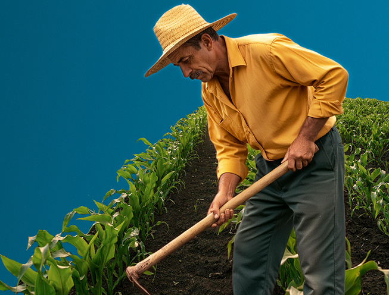

Ventanilla única del Registro Nacional Agropecuario

Organismos ganaderos
- Aviso previo de constitución de una organización ganaderaIr al trámite
- Inscripción de constitución de organizaciones ganaderas, generales, especializadas y unionesIr al trámite
- Solicitud de registro de modificaciones a las inscripciones en el Registro Nacional de Organismos GanaderosIr al trámite
Organismos agrícolas
- Autorización de organización y funcionamiento de un organismo agrícolaIr al trámite
- Solicitud de registro de modificaciones a las inscripciones en el registro de organismos agrícolasIr al trámite
Organismos cañeros
- Registro de una sociedad y/o asociación como organización local de abastecedores de caña de azúcarIr al trámite
- Certificación de padrón de abastecedores ingenios azucareros, afiliaciones y renuncias de abastecedores de caña de azúcar Ir al trámite
Registro Nacional Agropecuario
- Expedición de copias certificadas de documentos que obran en la custodia del Registro Nacional AgropecuarioIr al trámite
Organismos apícolas
- Certificación de criaderos de abejas reinasIr al trámite
- Solicitud de constancias de control de la varroasisIr al trámite
Accede a trámites y servicios del gobierno
Conoce la ventanilla única
Ver másPreguntas frecuentes
¿Cómo actualizo los medios de contacto en mi perfil de Llave MX?
- Entra a LlaveMx y accede a tu cuenta
- Ingresa el número de celular o correo electrónico que quieras actualizar
- Guarda los cambios
- Recibirás un enlace para verificar tu nuevo número de celular o correo electrónico actualizados, consulta más información dando clic aquí
Medios de contacto
Coordinación Ganadera
- Lic. Guadalupe Griselda Peralvillo Guzmán
- 55 3871 1000 ext. 40179
- guadalupe.peralvillo@agricultura.gob.mx
Trámites asignados
- Aviso previo de constitución de una organización ganadera - AGRICULTURA-02-003
- Inscripción de constitución de organizaciones ganaderas, generales, especializadas y uniones - AGRICULTURA-02-004
- Solicitud de registro de modificaciones a las inscripciones en el Registro Nacional de Organismos Ganaderos - AGRICULTURA-02-005
- Solicitud de expedición de constancias registrales y copias certificadas de documentos que obran en la custodia del Registro Nacional Agropecuario - AGRICULTURA-02-008
Registro agrícola
- Lic. Alberto Francisco Espinosa Razo
- 55 3871 1000 ext. 40170
- alberto.espinosa@agricultura.gob.mx
Trámites asignados
- Aviso previo de constitución de una organización ganadera - AGRICULTURA-02-006
- Solicitud de registro de modificaciones a las inscripciones en el Registro de Organismos Agrícolas - AGRICULTURA-02-007
- Solicitud de expedición de constancias registrales y copias certificadas de documentos que obran en la custodia del Registro Nacional Agropecuario - AGRICULTURA-02-008
Coordinación Cañera
- Lic. Gerardo Román Bustos Hernández
- 55 3871 1000 ext. 40172
- gerardo.bustos@agricultura.gob.mx
Trámites asignados
- Certificación de padrón de abastecedores ingenios azucareros, afiliaciones y renuncias de abastecedores caña de azúcar - AGRICULTURA-02-009
- Registro de una sociedad y/o asociación como organización local de abastecedores de caña de azúcar - AGRICULTURA-02-010
- Solicitud de expedición de constancias registrales y copias certificadas de documentos que obran en la custodia del Registro Nacional Agropecuario - AGRICULTURA-02-008